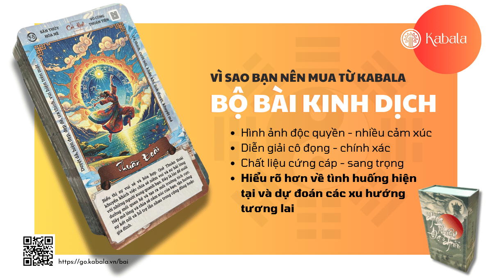

Sự lựa chọn mạnh hơn số phận.
Kabala là nơi lưu giữ những gì chúng tôi đã dày công xây dựng về triết lý, thực hành và mệnh lý. Dùng chúng để hiểu mình hơn, rồi tự bước đi trên con đường của chính bạn.
Triết lý Kabala
Mọi khổ đau của con người đều bắt nguồn từ hai yếu tố: Lòng Tham và Cái Tôi. Khi thấu hiểu và vượt qua hai điều này, hạnh phúc chân thật không còn là điều xa vời. Nó luôn ở ngay hiện tại.
Tôi MuốnHạnh Phúc
Bỏ “Tôi” (Cái Tôi), bỏ “Muốn” (Lòng Tham). Điều còn lại chính là Hạnh Phúc, ngay tại hiện tại.
“Cuộc sống giống như hành trình trên một chiếc xe đạp: đi nhanh thì mất lái, đi chậm thì mất cân bằng. Quan trọng là luôn đi với tốc độ phù hợp với khả năng của bản thân.”
Hành trình Thấu Hiểu Bản Thân là hành trình quan trọng nhất.
- Thấu hiểu bản thânNhìn rõ Cái Tôi và Lòng Tham của chính mình.
- Hạnh phúc chân thậtKhông tìm ở đâu xa, vì nó ở ngay hiện tại.
- Một cuộc đời đầy ý nghĩaSống trọn vẹn với tốc độ phù hợp với bạn.
Tâm thư về dự đoán và huyền học
Gửi những người đã tin tưởng Kabala, và những người sắp đến với chúng tôi.
Không nên coi những tính toán và nội dung của các môn Huyền Học làm cơ sở duy nhất cho mỗi quyết định. Cuộc đời còn phức tạp hơn nhiều những luận đoán này.
Hôm nay là huyền học, ngày mai là vật lí học. Mỗi môn khoa học đều chứa một phần sự thật và đều chứa một phần không chính xác.
Một ngày có thể là may, có thể là rủi, kết quả sẽ khác đi phụ thuộc vào việc ta làm gì và hành động như thế nào. Cái rủi dạy cho ta một bài học, cái may khiến ta lười biếng.
Sự lựa chọn mạnh hơn cả số phận. Sự lựa chọn chi phối số phận. Quên đi điều đó thật dễ dàng nên chúng ta thường tiếp tục bỏ qua. Đó chính là nguy hiểm và là nguy cơ tiềm ẩn trong các môn mệnh lí.
Không nên chờ đợi sự tiên đoán số phận nói với chúng ta điều gì về tương lai, vì tương lai trở thành những trang lịch sử khi chúng ta viết nên chúng. Số phận là sự có thể, lịch sử là cái chúng ta biến sự có thể thành hiện thực.
Con người càng nhiều ham muốn thì số phận càng định hình rõ ràng. Khi bạn sống một cuộc đời giản dị với một tâm thái nhẹ nhàng thong dong, không số phận nào có thể trói buộc được bạn, và bạn không cần phải xem huyền học.
Kabala không còn cung cấp dịch vụ có phí nào liên quan đến Huyền Học.
Phần lớn vì hệ thống miễn phí của Kabala đã đủ tốt, và AI hiện nay đã hỗ trợ người dùng rất tốt. Toàn bộ công cụ bên dưới đều mở cho bạn dùng tự do.
Trân trọng, đội ngũ Kabala
Di sản và tinh túy của Kabala
Ba nhóm giá trị chúng tôi tích lũy qua nhiều năm: triết lý để nhìn đời, thực hành để sống nhẹ, và công cụ để tự soi chiếu.
Hệ thống triết lý
Những khung tư duy giúp bạn đặt câu hỏi đúng về bản thân, giáo dục và cách làm nên một cuộc đời.
- Đạo AnCon đường tìm sự an trong tâm giữa đời sống nhiều biến động.an.kabala.vn
- Giáo dục La BànĐịnh hướng cho người học và cha mẹ: hiểu bản thân trước khi chọn đường đi.laban.kabala.vn
- Bánh xe cuộc đờiNhìn lại các mảng sống của bạn để thấy phần nào đang đầy, phần nào đang cạn.banhxecuocdoi.kabala.vn
- Công thức thành côngMột công thức thực tế để biến mục tiêu thành hành động đều đặn.up.kabala.vn
- Số Mệnh & Ý ChíSố mệnh là khả năng, ý chí là thứ biến khả năng thành hiện thực.kabala.vn/somenh
Thực hành
Những phương pháp để bạn tự làm mỗi ngày: lắng lại, thở sâu, nghe và hiểu cơ thể mình.
- Thiền ĐịnhCác buổi thiền hướng dẫn cho người mới bắt đầu và người đã quen.thien.dabala.vn
- Nhạc Tần SốÂm thanh theo tần số để thư giãn, tập trung và nghỉ ngơi.hz.kabala.vn
- Thiền hơi thởThực hành hơi thở để làm dịu thân tâm ngay trong vài phút.prana.kabala.vn
- Giả Thuyết Sáng ThếMột cách suy ngẫm về nguồn gốc của vũ trụ và con người.theory.kabala.vn
- Hoàng đế nội kinhY thư cổ phương Đông về mối liên hệ giữa con người, tự nhiên và sức khỏe.noikinh.kabala.vn
Công cụ mệnh lý
Miễn phí và mở cho mọi người. Hãy dùng như một tấm gương để tham khảo, không phải bản án.
- Huyền Sư KabalaTrợ lý huyền học để hỏi đáp và luận giải theo ngữ cảnh của bạn.huyensu.kabala.vn
- Bát Tự – Tứ TrụLập và đọc lá số theo giờ, ngày, tháng, năm sinh.battu.kabala.vn
- Tử ViLập lá số Tử Vi đẩu số với các cung và sao đầy đủ.tuvi.kabala.vn
- GematriaQuy đổi chữ cái thành con số để khám phá tầng nghĩa ẩn trong tên.gematria.kabala.vn
- Lịch Vạn NiênTra âm dương lịch, tiết khí, ngày tốt xấu theo truyền thống.lich.kabala.vn
- Thần Số HọcGiải mã các con số chủ đạo từ ngày sinh và tên gọi.number.kabala.vn
- Ma Trận Định MệnhSơ đồ năng lượng ngày sinh với các điểm mạnh, bài học và tiềm năng.matrix.kabala.vn
- Human DesignBiểu đồ thiết kế con người: loại hình, chiến lược và cách ra quyết định.humandesign.kabala.vn
- Xem tướngĐọc các đặc điểm gương mặt theo tướng học phương Đông.xemtuong.kabala.vn
Bộ bài Kinh Dịch của Kabala
Mỗi lá bài là một quẻ Kinh Dịch. Hãy dùng bộ bài để dừng lại, suy ngẫm và đặt câu hỏi cho chính mình.

Mua bộ bài Kinh Dịch